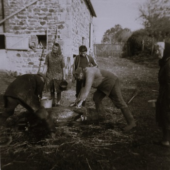

Gabriel de retour au front
Fini l’enthousiasme et les espoirs d’une guerre courte du mois d’Août 1914, les soldats ont compris que la guerre sera longue et meurtrière. Commencent à apparaître des chants anti-militaristes composés dans les tranchées, comme la Chanson de
Craonne qui décrit parfaitement l’amertume et les désillusions des Poilus.
Nous sommes en Janvier 1915 et après une courte permission pour Noël 1914, Gabriel est de retour au front, depuis la veille de Noël ! C’est la cousine Marie Reuge qui nous l’apprend dans une lettre à Antoine. Et bientôt, Maria donne aussi des
nouvelles de Gabriel à Antoine.
Mon cher cousin,
Voilà déjà quelque temps que tu ne nous a plus donné de nouvelles. J’espère cependant que ton bras est en bonne voie de guérison. Nous allons toujours très bien pour le moment.
Gabriel a eu huit jours de permission, ça était bien vite passé. Il est reparti depuis la veille de Noël, il est à peu près guéri.
J’ai écrit à Auguste il y a quelques jours, je pense qu’il a reçu ma lettre. Si tu le vois, dis-lui un bonjour de ma part.
Permets-moi de vous offrir à tous deux mes meilleurs vœux de bonheur pour la nouvelle année que nous venons de commencer. Il faut espérer qu’elle nous apportera un peu plus de joie que celle que nous venons de quitter.
Je termine en te souhaitant ainsi qu’à Auguste une bonne chance pour ….
Ta cousine qui t’aime bien.
Marie
Cher frère,
Je t’écris deux mots pour te dire que Gabriel nous a écris dimanche dernier.
Il nous demandait de la naphtaline pour le préserver des poux. Il dit qu’il y a beaucoup de ses camarades qui en ont. Nous lui envoyons aujourd’hui des chaussettes, ainsi qu’une chemise, un caleçon, un petit gilet. Tu
sais, ce n’est pas facile à laver en cette saison pour eux.
J’espère que tu es en bonne voie de guérison et qu’Auguste n’est pas encore parti, il a bien le temps d’y aller. Il nous disait qu’il pensait faire d’autres convois. Si c’est la même direction, qu’il noublie pas de venir
nous voir.
Je n’adresse que les lettres à toi, si Auguste n’y était pas, ce serait ennuyeux, comme vous avez des raisons de vous voir. Tu donneras des nouvelles à Auguste.
Votre sœur qui vous embrasse.
Maria
Gabriel a en fait rejoint le 98eme régiment depuis fin Octobre aux Bois des Loges, lieu qui a été le théâtre d’une bataille effroyable au début du mois. Depuis Septembre, les armées françaises et allemandes sont
engagées dans « une course à la mer » et se livrent à de violents combats. Au Bois des Loges la 25eme division d’infanterie française fait face à trois divisions allemandes, et l’ordre est donné d’abandonner le terrain.
L’histoire raconte que le capitaine Lionel Lemoël, à la tête du 98eme, refuse de reculer et oblige ainsi les autres compagnies à faire de même. Le Bois des Loges ouvre la route vers Compiègne, et c’est donc un enjeu stratégique. A l’issue
de la bataille, les morts se comptent par milliers notamment du côté allemand mais la France refusera une trêve demandée par les allemands qui veulent évacuer leurs morts.
La bataille du Bois des Loges restera l’un des faits d’armes emblématiques du 98eme RI. Cette période du mois d’Octobre est relatée avec détail dans l’ouvrage de Philippe Puccini, En Avant !. Travail de recherche exhaustive, cet ouvrage est
basé sur les carnets de guerre du capitaine Lemoël dont voici deux extraits qui en disent long sur l’intensité de la bataille et les horreurs auxquelles Gabriel est exposé dès son retour:
Note manuscrite remise le 10 octobre par le sous-lieutenant Lemoël au chef de bataillon Gaube concernant la journée du 4 octobre :
Cette journée est encore plus dure que les précédentes. Les marmites descendent du ciel avec une fureur effrayante ; les cadavres s'amoncellent ; il ÿ a des scènes navrantes ! Un seul coup enlève trois hommes et arrose la tranchée d’une
pluie sanglante de chair et de cervelle ; les survivants sont hagards et fuient à toutes jambes. Cinq minutes après, je les reconduisais à leur tranchée, à leur tombeau.
Journée atroce et horriblement meurtrière ; une mitrailleuse est braquée sur notre carrefour et balaie impitoyablement. Je vais, deux fois, rendre visite au capitaine Rigault, en parcourant à toutes jambes les 150 mètres qui nous
séparent, jeu dangereux que le pauvre capitaine m'interdit de recommencer. Il est certain que la mitrailleuse a rectifié son tir car, à mon dernier bond, une balle est venue s’aplatir sur le talus à l'endroit où ma tête venait de
disparaître, de telle façon que Fourgeron s’est écrié : “Vous êtes touché !”
En dehors du flux et du reflux, des sections qui fléchissent et qu’il faut à toute force ramener au feu, je me livre, soi-disant, à un réglage d'artillerie sur la maison rouge. Je m'empresse de dire qu'aucun obus n'a porté malgré mes
efforts désespérés pour faire des croquis sous les marmites. Mon poste d'observation est la toiture de la dernière grange au nord des Loges. La vue est splendide.
Les boches s'agitent terriblement dans leurs tranchées ; je prends un fusil et je brûle quelques cartouches en compagnie du sergent Richert, en attendant la communication avec l'artillerie qui tarde à venir. Les boches sont plus à l'œil.
Bzz.. Bzz... le premier 77 frôle mon observatoire, le second le traverse de part en part, à 2 mètres de ma droite. “Mon lieutenant, je crois que nous sommes repérés. Nous avons eu tort de tirer... Allons ailleurs.”
Je vois tomber le jour avec un soupir de soulagement. Quelle triste soirée ! Que va nous réserver la nuit? Mes hommes sont à bout physiquement et moralement. Pardi, on tiendra tant qu'il faudra ! Je pense à mon capitaine. Serait-il
content de mes Poilus s'il était là ? Oui, sûrement …
Un beau jour, un parlementaire se présenta, c'était un médecin qui n'avait d’ailleurs aucune lettre officielle pour remplir ce zèle. Il réclama une journée d'armistice pour relever les blessés. On le renvoya à coups de pied dans le
derrière en lui donnant un quart d’heure pour faire ce qu’il demandait.
Une trêve eut lieu néanmoins et, pendant un quart d’heure, brancardiers français et allemands travaillèrent côte à côte dans la plaine. Les boches se précipitèrent tout d’abord sur un cadavre tombé près de nos lignes et l’emportèrent. Les
nôtres accoururent et ramassèrent le casque. C’était celui d'un officier supérieur.
Ce jour-là fut aussi ramené un sous-lieutenant de grenadiers qui portait 18 blessures, dont aucune mortelle. Il était néanmoins très faible... dame ! Six jours sans manger au milieu des macchabées ! Je lui parlai un peu. Il avait 21 ans ;
c'était un mou. Il répétait sans cesse : « Bon. Bon, Français, Kamerad ! Nous aussi, bons Allemands pour pauvres Français »
Son portefeuille contenait comme papiers intéressants l’ordre « Für Angriff » du 5 octobre. C’est comme cela que nous apprîmes que nous avions eu à notre disposition : deux régiments d'infanterie (le 140’, garnison Hohensalza et le 4%,
garnison Guesen), un bataillon du 9° Grenadier : garnison Stuttgart, deux compagnies de pionniers et un groupe d’artillerie. Les impressions de Ne & de cet officier sont assez concises.
Après les blessés, ce fut le tour des morts. Les brancardiers divisionnaires y passaient toutes les nuits. On en faisait des tas de 50 qu’on arrosait de coaltar. Puis on y mettait le feu. Quelques Jours plus tard, on arrosait le tout
de chaux vive ... et l'on pouvait s’approcher sans danger.
Bizarre spectacle que ces corps tout blancs à peine défigurés par le feu. On aurait dit des statues de marbre, mais d'un marbre peu solide car, dès qu'on y touchait, tout tombait en poussière !...
Extraits - En Avant ! Capitaine Lionel Lemoël 1914-1916 - Philippe PUCCINI
Arrivé fin Septembre 1914 au Bois des Loges, le 98eme RI y restera plus d’une année pour tenir la position contre les allemands. Le régiment est d’ailleurs fier de l’éloge du général de Castelnau, commandant l'armée : « Tant que le 98e
occupera les Loges, je serai tranquille. ». Désormais rattaché au Génie, Gabriel participera activement à la construction des systèmes de défense.
Au pays et à Lyon, on pense bien fort à lui et pour l’instant c’est surtout de colis que l’on parle. Mais déjà, il est clair que Gabriel ne dit pas un mot de ce qu’il a vu en arrivant au Bois des Loges.
Le 11 Janvier,
J’ai reçu le colis hier soir , rien de cassé ni de perdu.
Je suis en bonne santé, j’ai assez d’argent.
Il pleut toujours mais il fait pas froid.
Je vous embrasse tous bien fort.
Gabriel
Cher oncle,
Je suis en bonne santé, j’ai reçu hier soir la lettre de chez nous et une d' Antoine.
Le temps est toujours à la pluie, il fait pas trop froid.
J’espère que ma carte vous trouve en bonne santé aussi.
Gabriel
Ma chère Léa,
J’ai reçu ta lettre avec plaisir. J’espère que cette carte te trouvera en bonne santé ainsi que toute la maison. Quant à moi, tout va bien.
Auguste vient me voir tous les soirs. J’ai reçu une lettre de Gabriel, il est en bonne santé , il a reçu le colis que nous lui avons envoyé.
J’ai reçu une lettre de Marcel il trouve le métier un peu amer, mais ça passera bien.
Je ne vois pas autre chose à te dire. J’écrirai une plus grande lettre un de ces jours.
Ton parrain qui pense à toi.
Gabriel
Voici une carte intéressante qui en dit un peu plus sur la situation des simples soldats, mais aussi sur le fait que beaucoup d’entre eux comptait sur la famille pour leur envoyer des vêtements chauds …
Chers Parents,
J’ai reçu votre colis samedi soir le 16. Le rôti était très bon et surtout les raisins et les figues. Rien s’était abîmé, j’ai trouvé aussi le chocolat et le sucre noir.
Comme je vous l’ai déjà écrit, j’ai 4 jours de repos, aujourd’hui c’est le troisième jour. On a distribué des effets, mais je n’ai rien touché. Vous savez, les gradés passent les premiers et le soldat il prend ce qui
reste.
Vous m’enverrez mes pantalons de velours avec une chemise et un caleçon. J’ai un gilet marin. Mais il faut pas vous précipiter, j’ai cousu les miens entre les jambes, ils sont encore pas trop déchirés.
Aujourd’hui, la neige tombe toute la journée. J’ai assez de chaussettes pour quelques temps. Vous pourrez m’envoyer des chaussons en flanelle.
Je vous embrasse encore une autre fois bien fort.
Gabriel
Cher frère,
J’ai reçu ta lettre du 9.
Je suis content que Antoine soit été chez nous et que tu sois toujours au dépôt.
J’ai reçu beaucoup de colis ces temps. Je suis en bonne santé, ces jours il fait pas froid.
J’ai écrit hier à Antoine, peut-être qu’il la recevra pas.
Ton frère qui t’aime.
Gabriel
Chers parents,
J’ai reçu le colis hier soir. Il n’y a rien d’âbimé et c’est très bon.
Antoine m’a écrit hier aussi, il m’envoie un briquet. Je crois que ce soir je l’aurais.
Hier soir, il a fait orage, il tonnait fort et il est tombé une rafale de neiges mais aujourd’hui le soleil les a balayées.
Je suis en bonne santé. Je désire que ma carte vous trouve de même.
Je termine en vous embrassant.
Gabriel
Bien sûr, Gabriel pense toujours aux deux petites jumelles et il trouve toujours des mots simples pour décrire sa vie à la guerre, sans vraiment en évoquer la réalité. Bien sûr, les deux jumelles rivalisent pour écrire à leur Dodole … et
Maria en profite pour glisser quelques informations plus pratiques sur un coin de carte …
Cher frère,
Je t’écris pour te dire que je suis avec Antoine.
Je suis allé le chercher hier soir avec le papa à Lapeyrouse. Il est venu pour 7 jours. Je voudrais aller pouvoir te chercher comme lui.
Auguste a passé chez nous en venant de Rennes, il a resté 2 jours.
Nous sommes bien contents que tu te portes bien, mais le temps me dure bien de te voir. Quand donc finira cette maudite guerre ? Je vois plus rien à te dire pour le moment.
Je t’embrasse bien fort. Augustine
Je t’envoie un colis et une lettre demain, un réchaud, du lait concentré. Maria
Chère Léa,
Je t’envoie cette carte pour te dire que je suis toujours en bonne santé.
Depuis que je suis ici, je suis mieux qu’avant. On voit des civils, des enfants qui viennent nous voir. C’est pas si désert qu’au 98.
Je bois du lait chaud tous les matins. Cette nuit, il a gelé très fort et il tombe quelques neiges de temps en temps.
Nos lettres commencent à venir, j’en ai pas reçu encore mais je vois qu’elles se perdront pas. Hier, j’ai mangé une omelette avec Sauvanet de Monchaujoux.
Tu dois être à Chez Chamard, j’adresse la lettre pour ça.
Ton Dodole qui t’embrasse et toute la famille.
Gabriel
Chère Augustine,
Je suis en bonne santé depuis que je suis au génie. Je dors mieux et je bois du bon lait les matins. Je suis mieux qu’au 98. J’ai écrit hier à Léa.
J’ai pas reçu de lettres depuis que je suis ici, mais c’est le changement d’adresse qui fait ça.
Il a gelé fort ces deux ou trois jours. Aujourd’hui le temps est radouci.
Je voulais t’envoyer une fleur du pays, mais la gelée les a abîmées.
Je mange quelquefois des pissenlits, il y en a beaucoup dans ce pays.
Je t’embrasse bien fort ainsi que toute la maison.
Ton Dodole qui pense à toi. Gabriel
Gabriel donne un peu plus de détails sur sa vie au front, avec quelques anecdotes sur les conséquences bien réelles du conflit pour les habitants locaux. Il semblerait également que la censure militaire commence à adopter une approche plus
stricte sur les courriers des soldats comme Gabriel en fait état dans l’une des cartes …
J’ai reçu la lettre de Marie du 8 Mars ce matin.
Elle était passée à ma compagnie, elle a eu du retard. Je suis en bonne santé pour le moment.
Il fait assez beau temps maintenant. Je suis toujours au génie. Je vous envoie l’église du village, elle est fermée, le curé est sur le front. Elle n’a pas été endommagée par les obus qui l’ont cependant bien approchée
de près.
Auguste m’a écrit aujourd’hui, il se trouve assez heureux à Lyon. Il dit qu’il a visité mon ancienne caserne. Antoine Durand m’a aussi envoyé une carte. On est assez heureux de pouvoir se parler. Pour le moment, on nous
a rien dit à propos de la correspondance, je crois que ça serait un bruit qui aurait couru.
Enfin, pour le moment nous avons pas trop eu de malheur, il faut espérer que ça continue comme ça. Cette guerre ne durera pas toujours, on oubliera nos peines quand on se retrouvera.
Je vous embrasse tous.
Gabriel
Chers parents,
Je viens de recevoir votre lettre et la carte que Augustine m’envoie et j’ai reçu en même temps 2 colis, celui du 8 Mars et le dernier qui a la boite de lait.
Ils n’étaient pas abîmés du tout. J’ai trouvé les dattes qui sont bien bonnes, j’ai trouvé aussi le petit paquet de boutons qui sont très pratiques. J’ai écrit hier à Jean et à Justin et à La Viale.
Il fait toujours assez beau temps, il y a un peu de brouillard le soir mais il fait pas froid.
Je vous envoie le château où sont déposés nos outils et le matériel du génie. C’est une belle ferme, pour le moment elle n’a reçu qu’un obus au milieu de la cour qui n’a pas fait de mal aux bâtiments.
Je suis toujours en bonne santé.
Gabriel
Mon cher frère,
Je viens de recevoir le briquet, il a mis longtemps mais rien ne s’était abîmé. La bouteille n’est pas cassée, le briquet va très bien et l’amadou est bon.
J’ai reçu une lettre de Chez Chamard. C’est la première depuis que je suis au génie.
Rien de nouveau à t’apprendre.
Ton frère qui t’embrasse.
Gabriel
Voici l’une des rares lettres de Gabriel qui a survécu. C’est une lettre à Augustine qui raconte l’histoire bien triste du boulanger du village où Gabriel est cantonné. C’est également une lettre attendrissante que Gabriel a pris grand soin
d’ornementer avec des fleurs du pays …
Chère Augustine,
Je t’envoie ces quelques fleurs que j’ai cueillies dans le jardin où je suis cantonné.
Elles seront un peu abîmées quand elles seront arrivées, mais elles ont du mérite. Elles ont entendu plus d’une fois, le canon. Nous avons une batterie tout près.
Dans ce village, les allemands y ont été. Mais ils ont été repoussés. Ils avaient pris le boulanger, ils lui faisait faire du pain jour et nuit. Quand il a vu ça, il s’est pendu.
Le village n’a encore pas bien de mal jusqu’à présent. C’est un petit patelin assez plaisant et bien en plaine.
J’ai pas autre chose à vous dire. Je termine en vous embrassant tous bien fort. Gabriel
Comme en témoignent les cartes suivantes, cette lettre avec les fleurs a fait grand plaisir à Augustine et Léa. C’est dans la même boîte de biscuit en fer blanc que je retrouverai cette lettre bien des années plus tard … et plus de cent ans
après
que la lettre fût écrite, les fleurs sont toujours intactes …
Cher frère,
J’ai reçu ta lettre avec les fleurs, elles n’étaient pas abîmées.
J’ai été très contente, chez nous aussi. Je les ai portées voir à la Marie. Elle les a trouvées bien jolies. Je t’assure que je les ai embrassées plusieurs fois avec Léa et puis maintenant elles sont bien conservées dans
une boîte.
Cher Dodole, c’était le dimanche des Rameaux, la pluie a tombé toute la journée. Nous avons pas pu aller à la messe avec Léa, mais nous avons pas oublié de dire notre petite prière pour toi.
Toi, tu souffres bien de cette terrible guerre. Je voudrais bien pouvoir te soulager, enfin tu nous fais plaisir maintenant que tu nous dis que tu es mieux que dans les tranchées.
Je termine en t’embrassant bien fort.
Ta sœur qui pense souvent à toi.
Augustine
Cher Dodole,
Je t’écris ces quelques lignes pour te donner de mes nouvelles. Je suis en bonne santé et je désire que tu sois en pareille disposition.
Nous avons reçu les belles fleurs que tu nous a envoyées, mais surtout tu as bien su les placer.
Cher petit Dodole, nous avons reçu des nouvelles d’Auguste et Antoine. Auguste est toujours convoyeur, il pense y rester quelque temps.
Tu me disais que tu m’envoyais une carte. Je ne l’ai pas encore reçue, peut-être aura-t-elle un peu de retard. Cher Dodole, à l’instant où je fais la carte, Maria fait un colis pour toi qui te fera passer la fête de
Pâques en songeant à nous.
Cher frère, je termine ma lettre en t’embrassant sur les deux joues et te souhaite un heureux anniversaire.
Léa
Gabriel est le frère aîné, et en tant que tel il prodigue quelques conseils à Antoine mais il est clair que la lassitude s’installe et que la famille lui manque …
Cher Antoine,
J’ai reçu ce matin ta lettre du 23.
Tu me dis que Auguste est parti comme ordonnance. Il a peut-être pas mal fait avec ces officiers, là on est un peu moins au danger – ils approchent pas bien de la ligne de feu.
Il était pas mal tranquille avec toi mais il aurait des fois été rejoindre son régiment. Comme ça, il sera peut être mieux en sûreté, c’est ce que je souhaite de tout mon cœur.
Jean Tauveron m’a écrit ce matin, il est dans l'Argonne. Il dit que c’est long cette vie, lui aussi. Je suis en très bonne santé, tu me donneras des nouvelles d’Auguste aussitôt que tu en auras.
Pour le moment, je trouve quelques petites choses à acheter, c’est un peu cher mais tu sais bien que l’argent me manque pas. J’ai reçu la plaque, je croyais de te l’avoir écrit tout de suite.
Tâche de pas d’en faire là-bas à Lyon et si tu peux des fois passer dans l’auxiliaire, fais ce que tu peux.
En attendant de nous revoir tous en bonne santé, je t’embrasse bien fort.
Gabriel
Cher frère,
Je t’envoie de mes nouvelles qui sont assez bonnes pour le moment
Aujourd’hui, il a tombé de l’eau toute la journée, c’est un triste jour de Pâques. Ce matin, j’ai fait mes Pâques, il y avait une messe à six heures que l’aumônier a dit. Sauvanet est venu aussi avec moi.
J’ai reçu le colis postal de chez nous ce matin, il a eu un peu de retard. J’ai pas reçu d’autre lettre d’Auguste, mais il a des fois changé d’endroit.
Je suis en bonne santé pour le moment, j’espère que tu sois de même. J’ai écrit chez nous et à Muratel. J’ai trouvé le rameau dans la dernière lettre.
Cher frère, j’ai pas autre chose à te dire pour aujourd’hui.
Je t’embrasse bien fort. Gabriel
Nous sommes le 3 Avril 1915, et Maria envoie cette carte à Gabriel. Il est déjà tard dans l’année, mais à la ferme on n’a pas encore tué le cochon car on espérait que Gabriel viendrait en permission. Mais les jours deviennent plus chaud, et
il faut maintenant passer à l’acte … Ça ne peut plus attendre !
C’est aussi la fête de Pâques, et tant pour lui à la guerre que la famille à la ferme, son absence est sans doute encore plus vive. Ces deux cartes doivent bien donner le mal du pays à Gabriel …
Cher frère,
Je t’ai écris hier soir.
Ce matin, je t’envoie un colis de saucisson, du fromage, des cigarettes, du sucre noir et des biscuits. Tu nous diras s’ils sont meilleurs que les petits beurres.
La semaine prochaine, nous t’en enverrons un autre.
Cher frère, je te dirais que nous n’avons pas tué le porc, nous t’attendions mais je vois que nous serons obligés de le tuer sans vous, ce qui nous fait de la peine. Mais enfin, nous tâcherons de t’en faire goûter.
Je t’embrasse. Maria
Cher petit Gabriel,
Je veux être égale à ma petite Léa. Je t’écris aussi pour témoigner mon amitié si grande.
Nous avons grandi depuis que tu n’es plus chez nous. Tu sais, nous sommes sages à présent. Je désire beaucoup te voir sans retard. Pour cela notre père a demandé ta permission depuis Dimanche. Je désirerais bien qu’elle
soit acceptée. Ce serait des jours heureux passés avec nous.
Nous sommes tous en bonne santé. Chez nous hier soir, ils ont parlé avec Berthon, il était à la prière, il est venu en permission. Il leur a dit que tu étais allé le voir un de ces jours et que tu ne te fais pas de bile.
Tu as raison, les jours passeront vite.
Ce matin, nous sommes décidés à t’envoyer 10 francs par mandat pour faire la fête de Pâques puisque tu n’es pas venu.
Augustine Bouchardon
Arrêtons-nous nous un instant sur la fête au cochon ! Si la guerre fait rage sur le front, à l’arrière la vie des campagnes suit son cours, jalonné par des traditions ancestrales … et s’il est une tradition importante en Auvergne, c’est bien
la fête au cochon.
Maria l’écrit dans sa lettre du 3 Avril, ils ont attendu que Gabriel vienne en permission pour tuer le cochon, mais il est clair qu’ils ne peuvent plus attendre. Début Avril, c’est déjà bien tard, avec le temps qui se radoucit, il faut faire
vite. En effet, la tradition est de tuer la bête en février ou début mars, quand il fait encore froid pour que la viande ne s’abîme pas.
Par chez nous, toute cette affaire prend environ deux jours. Le premier jour est consacré à l’abattage et le dépeçage de l’animal, le second jour est dédié à la préparation des charcutailles (boudins, andouillette, ..), saucissons et jambon
salé.
Le rituel n’a pas vraiment changé au fil des années, et il y avait sans doute peu de différences entre Avril 1915, quand ils tuèrent le cochon à la ferme des Raynauds, et les années 70, quand Marcel et Louise (les deux enfant d’Auguste) le
faisaient au hameau de Chez Chamard.
J’ai gardé quelques photos de la fête au cochon des années 70, étape par étape …
- 

Pour découvrir plus de détails sur la fête au cochon, visitez-donc le site d’Irène Boulogne sur la vie paysanne d’autrefois.
Mais reprenons le cours de notre histoire avec un doux échange de cartes entre Léa et Gabriel …
Chère Léa,
Je t’envoie de mes nouvelles qui sont toujours bonnes.
J’ai reçu la lettre et le colis que tu m’as envoyée. Elle me dit que tu gardes bien les moutons avec Augustine. Je vous ai envoyé une petite photo, j’espère que vous la recevrez. Cependant, ces jours il paraît que nos
lettres ont du retard – il faudra me dire si c’est vrai.
Aujourd’hui, il fait pas chaud, beaucoup de vent et très froid, mais il vaut mieux pour moi que s’il pleuvait.
J’ai reçu une lettre d’Auguste depuis qu’il est parti de Lyon et je lui ai envoyé une photo.
Je termine cette carte en t’embrassant.
Ton Dodole qui pense à toi.
Cher petit frère bien aimé,
Je pense à toi ce soir, je m’empresse de te donner de mes nouvelles. Je vais bien ainsi que tous, je désire que tu sois pareil.
Je ne puis m’empêcher de te remercier du plaisir que tu nous a causé Dimanche en voyant ta photo. Je t’ai embrassé plus d’une fois avec Augustine.
Aujourd’hui, il fait orage, il pleut, j’entends tonner. Mais cher frère, c’est bien autre chose que le bruit du canon.
Enfin, j’espère que pendant ce mois de Mai, la Sainte Vierge écoutera mes prières, qu’elle délivrera notre patrie au plus tôt.
Reçois de ta sœur un doux baiser.
Léa
Cher frère,
Je t’envoie de mes nouvelles qui sont toujours bonnes.
Il y a quelques jours que tu m’as pas écris, Auguste m’a écrit avant-hier.
J’ai trouvé Gabriel Sol hier soir, il m’a demandé de tes nouvelles, il est au train de combat. On a guère causé ensemble, c’était en allant au travail. Lui il conduisait une voiture de galonnés pour les tranchées. Je lui
ai donné l’adresse d'Auguste.
Tu me diras si mes lettres mettent toujours si longtemps pour arriver. J’espère que ma carte te trouvera en bonne santé.
Ton frère qui pense à toi.
Gabriel
Chères petites sœurs,
En remerciement des bons gâteaux que je viens de recevoir, je vous envoie ces fleurs que j’ai cueillies dans le jardin de notre patronne qui vient de nous quitter.
Mille baisers de votre Dodole.
Juin 1915 … c’est la période des foins à la campagne. Si Gabriel continue à décrire sa vie au front, en bon paysan, il garde un intérêt aigu pour le travail des champs. Les champs de trèfle non travaillés qui l’entourent lui rappellent son
vrai métier. Sans doute cela lui fait mal au cœur et il est inquiet pour ceux de la ferme …
Chers Parents,
J’ai reçu ce matin une lettre d’Antoine, il me dit qu’il part pour son congé. Vous serez contents de l’avoir avec vous, ça se pourrait des fois qu’il reste longtemps.
Je suis en bonne santé pour le moment. Aujourd’hui, il fait un temps lourd, on dirait qu’il va tonner.
Hier, j’ai écrit à Auguste. J’avais reçu deux de ses lettres. Maria m’avait demandé si le pain était bon. J’ai oublié de vous en parler. Nous avons resté quelques jours qu’il était un peu moisi, mais à présent il est
moins vieux et il est même bon pour être transporté comme il est.
Je n’écris pas à Antoine. Je crois qu’il va pas tarder à être avec vous.
J’espère que ma carte vous trouvera en bonne santé tous.
Je vous embrasse bien fort.
Gabriel
Chers Oncle, Tante et Sœur,
Je vous envoie ce soir de mes nouvelles qui sont très bonnes pour le moment.
Ce matin les Boches nous ont envoyé une bonne rafale sur le village mais les maisons n’ont pas été touchées. C’est sans doute en l’honneur de la fête. On a remarqué, les jours de fête, ils sont toujours plus mauvais.
Je couche toujours dans la cave de la maison, elle est assez solide et pas trop fraîche. On est content d’y être quand ça bombarde.
J’ai reçu deux lettres d’Auguste ce matin, il a changé de village.
Vous allez avoir beaucoup de travail, maintenant il faut pas m’écrire si souvent. Moi j’ai mieux le temps que vous de faire une lettre.
J’espère que ma carte vous trouvera en bonne santé.
Gabriel
Chers Oncle, Tante et Sœur,
Je vous envoie ces deux mots pour vous remercier de la lettre que j’ai reçue avant-hier.
J’ai trouvé le billet que vous m’avez envoyé. Je suis en bonne santé.
Il fait très chaud ici, ça serait un joli temps pour faire les foins, il y a pourtant de jolis morceaux de trèfle.
Je viens à l’instant de recevoir le colis d’Antoine et de Muratel. Les œufs sont abîmés et cassés – celui d’Antoine n’a pas pris de mal.
Je vous dis pas grand-chose pour aujourd’hui. Je pars au travail dans un instant. J’espère que ma carte vous trouvera en bonne santé.
Je vous embrasse bien fort.
Gabriel
Cher oncle,
Je vous écris ces deux mots ce soir avant de me coucher. Je suis en bonne santé, j’espère que ma carte vous trouvera de même.
J’ai reçu une lettre de Maria ce matin et hier une de Beaulaton Alexandre. Il attend de partir tous les jours sur le front.
Il fait toujours bien beau temps. C’est dommage que ça soit pas la même chose chez nous. A présent, il vous faudrait le beau temps avec le peu d’hommes qui restent au pays … et encore ils parlent que toujours d’en
appeler.
Ces Boches feraient pas mal de s’en aller chez eux, au moins tout le monde serait content. Depuis le temps que ça dure, j’en ai assez de ce travail.
Je vous embrasse bien fort.
Gabriel
Cher oncle,
J’ai reçu votre carte du 20 ce matin.
Je vois que vous faites de la besogne quand même, malgré que le temps est pas bien favorable. Ici, il fait très chaud aujourd’hui. Le temps était bien à l’orage, mais il a tombé que quelques gouttes d’eau.
C’est bien embêtant pour la femme Daniel d’avoir trouvé ce malheur. On peut bien dire que c’est une triste période que nous passons maintenant. Félix a encore eu de la chance qu’on le laisse tranquille et il vous aidera
bien en même temps.
J’écris en même temps chez nous, j’envoie deux bagues aux petites.
Auguste m’a écrit ce matin aussi. Il est toujours heureux dans son secteur.
Je vous embrasse bien fort.
Gabriel
Cher oncle,
Je suis en bonne santé pour le moment.
Auguste m’a écrit hier. Aujourd’hui, j’ai pas reçu de lettre, comme nous changeons de compagnie, ça les retardera un jour ou deux pendant quelques jours.
Il fait un peu moins chaud que les autres jours, nous avons eu un peu de pluie ces jours-ci.
Je vous envoie donc ma nouvelle adresse au 4ème Génie Compagnie auxiliaire 13/1-bis 4ème section secteur No 100
Gabriel pense toujours à ses deux petites sœurs. Même, s’il est loin, il garde un œil bienveillant sur elles, les réconforte et les encourage pour le travail de la ferme. Comme beaucoup de soldats, à temps perdu, il fabrique des souvenirs
avec les morceaux de cuivre ou de laiton récupérés des obus et cartouches. Ainsi, il semble avoir fabriqué des bagues pour Augustine et Léa.
Il prend également grand soin d’expliquer son travail au Génie, avec la fierté et la satisfaction du travail bien fait.
Ma chère Léa,
Aujourd’hui, j’ai reçu ta lettre du 28.
Je vois que tu écris toujours bien et aussi que tu es toujours bien sage ainsi qu'Augustine. Tu me dis que tu as laissé abîmer un mouton, mais c’est pas toujours bien facile de bien les garder.
Je pense que tu dois avoir reçu les bagues que j’ai envoyées. Aujourd’hui, c’était donc le départ d’Antoine et il est aussi assez embêté lui aussi.
Aujourd’hui, il a beaucoup tombé d’eau. Je crois que ça va devenir comme chez nous. Je suis bien content de ta photo.
Je termine en t’embrassant bien fort, ainsi que toute la maison.
Ton frère qui pense à toi.
Gabriel
Je vous envoie cette carte pour vous faire voir le travail que j’ai fait quelque temps.
C’est pas bien facile, mais une fois que c’est fait , c’est pas facile de traverser ces réseaux là.
Être affecté au Génie, c’est également apprendre un vrai métier mais cela requiert sans doute une bonne connaissance des travaux des champs. En tant que paysan, il n’est donc pas surprenant que Gabriel rejoigne le 4ème régiment du génie.
Sur la carte envoyée aux jumelles, il montre par exemple ce qu’il fait avec les barbelés. Dans l’un des journaux de marche du Génie, on trouve d’ailleurs la procédure à suivre pour construire ces défenses accessoires des tranchées.
Les journaux de marche des régiments du Génie sont bien souvent les plus jolis à consulter … pour la plupart, ils contiennent nombre de croquis d’abris, d’observatoires, de réseaux de tranchées, de ponts … montrant la grande versatilité et
ingéniosité des sapeurs. En voici, quelques exemples :
Orages d' Acier, écrit par Ernst Jünger, est l’un des ouvrages allemands de référence sur la Grande Guerre. Ernst Jünger a dix neuf ans quand il s’engage avec enthousiasme dans l’armée du Kaiser. Débutant comme simple soldat, il devient vite sous-officier, puis officier émerite. Il sera blessé quatorze fois et recevra, à la fin de la guerre, la plus haute décoration militaire allemande pour un jeune officier de 23 ans, la Croix pour le Mérite.
Son livre est précis et, à l’opposé de beaucoup d’ouvrages sur le sujet, presque froid et dénué d’émotions. Technique et analytique, il décrit avec une grande précision tous les aspects de la guerre : cette description des tranchées en est un bon exemple.
Nous devons faire tout d'abord une courte visite à la tranchée, telle qu'elle s'était développée à cette époque : elle donnera un contenu concret aux termes qui vont revenir constamment.
Pour arriver à la première ligne, qu'on appelle plus brièvement la tranchée, nous entrons dans un des nombreux boyaux d'accès, destinés à permettre la marche à couvert jusqu'à la position de combat. Ces boyaux, qui souvent ont des
kilomètres de long, mènent donc vers l'adversaire, mais, pour éviter d’être pris en enfilade, ils sont tracés en zigzag ou en arcs de faible amplitude.
Apres un quart d'heure de marche d'approche, nous rencontrons la seconde ligne, parallèle à la première et dans laquelle la résistance doit se poursuivre quand la tranchée de combat a été conquise.
Quant à cette tranchée, elle se distingue au premier coup d'œil des faibles dispositifs de défense établis au début de la guerre. Il y a longtemps que ce n'est plus un simple fossé : son sol se trouve à deux ou trois hauteurs d'homme
au-dessous du niveau du terrain. Les défenseurs s'y meuvent donc comme sur le plancher d'une galerie de mine; lorsqu'ils veulent observer les approches ou tirer, ils doivent escalader par des marches ou des échelles de bois la banquette
de tir, une longue banquette taillée dans la terre à une hauteur telle que ceux qui s'y tiennent debout dépassent d'une tête la couche de terre végétale.
Le tireur isolé se tient dans un poste de guetteur, une niche plus ou moins fortifiée, la tête protégée par un parapet en sacs de sable ou par un bouclier d'acier. Les seuls regards sont donc de minuscules meurtrières, par lesquelles on
passe le canon du fusil. Les grosses masses de terre tirées de la tranchée sont amoncelées derrière la ligne, en un parapet qui sert aussi de défense arrière ; c’est dans ce rempart de terre que sont établis les nids de mitrailleuse. Au
devant du boyau, au contraire, la terre est toujours soigneusement déblayée, afin de dégager le champ de tir.
Devant la tranchée s'étend, souvent sur plusieurs lignes de profondeur, et tout de son long, le réseau des barbelés, lacis complexe de fer barbelé, qui doit retarder l'approche de l'assaillant et per mettre aux guetteurs, dans leurs
postes, de le prendre sans hâte sous leur feu.
Les mailles de ce réseau sont pleines d'herbes hautes, car les champs en friche se couvrent déjà d'une végétation nouvelle et toute différente. Les plantes sauvages, qui d'ordinaire fleurissaient isolées parmi les céréales, ont pris le
dessus; çà et là, des broussailles basses commencent à foisonner. Les sentiers, eux, sont déjà recouverts par la végétation; mais ils se détachent encore nettement: car les feuilles rondes du plantain s'y épanouissent.
Ce désert est un séjour de choix pour les oiseaux, tels que les perdrix, dont on entend souvent l'appel étrange, dans les nuits, ou les alouettes, dont le concert résonne aux premières lueurs par-dessus les tranchées.
Pour ne pas être balayée de flanc, la tranchée de combat a un dessin sinueux: elle revient vers l’arrière en dentelures régulières. Ces parties en retrait laissent saillir les traverses, qui doivent
retenir les balles tirées de côté. Le combattant est donc couvert dans le dos par le parapet arrière,
sur les flancs par les traverses, tandis que le remblai antérieur de la tranchée fait fonction de parapet.
Pour le repos, on a creusé des abris, qui se sont développés à cette époque, du simple trou dans la terre à la véritable pièce d'habitation, bien close, plafonnée de rondins, et dont les parois sont coffrées de planches. Les abris ont à
peu près la hauteur d'un homme et s'enfoncent dans le sol de
telle manière que leur plancher est au niveau du sol de tranchée. Leur plafond de rondins est donc
recouvert d'une couche de terre assez épaisse pour résister aux coups de faible calibre. Mais quand
on est pris sous un tir de gros calibre, cette couverture de terre joue facilement le rôle de trappe à souris : aussi préfère-t-on dans ce cas le fond de la tranchée.
Les galeries sont étayées de robustes châssis de pois : le premier est encastré dans la muraille antérieure de la tranchée, au niveau de son sol, et constitue l'entrée de galerie: à chaque châssis suivant, on gagne trente centimètres
en profondeur, de sorte que la sape se trouve rapidement à l'abri des tirs. On a construit de cette manière l'escalier de galerie: au trentième gradin, on a donc déjà neuf mètres ou, en comptant la profondeur de la tranchée, douze
mètres de terre sur la tête.
Arrivé là, on enfonce des châssis un peu plus larges dans la même direction, ou en équerre par rapport à l'escalier : ils servent de bâti à la pièce d'habitation. Des liaisons transversales créent des boyaux souterrains; des
ramifications poussées vers l'ennemi servent de sapes d'écoute et de mine.
Il faut s'imaginer tout ce dispositif comme une énorme forteresse souterraine, qui s'étend, sans vie dirait-on, à travers le terrain, mais à l'intérieur de laquelle s'accomplit un service bien réglé de garde et de travail, et où chaque
homme se trouve à son poste, quelques secondes après l'alerte. On fera bien de ne pas s’en peindre l'atmosphère sous des couleurs trop romanesques; il y règne au contraire une certaine somnolence, une pesanteur telle qu'en créent les
contacts intimes avec la terre …

Extraits - Orages d'acier - Ernst Jünger
Juillet 1915 … Arrive la période des moissons. Une fois encore, Gabriel pense à la ferme et au dur travail du mois d’Août. Une fois encore, il ne pourra pas aider. Mais s’il n’aura pas de permission agricole, la bonne nouvelle est qu’Antoine
pourra participer. Antoine a d’ailleurs pris les devants, mais nous reviendrons sur ce sujet des moissons plus tard …
Cher Oncle,
Je vous envoie de mes nouvelles qui sont très bonnes pour le moment.
Je viens de recevoir une lettre d’Antoine. Il dit qu’il va partir en permission un de ces jours. Si il a seulement 15 jours, il vous aidera un peu pour la moisson qui doit être en train bientôt. Je ne sais pas quand ça
sera mon tour d’en avoir une.
Félix Sacristain m’écrit ce soir. Il me dit que le lieutenant de ma Compagnie a été tué. Je le savais déjà, ainsi que mon sergent.
Il fait assez beau, pas si chaud que le temps passé. Ici, c’est presque comme chez nous, la moisson commence mais il y en a guère à couper, des petits carrés, du côté le plus caché.
Pas autre chose de nouveau. Je termine en vous embrassant.
Gabriel
Cher Antoine et chers parents,
J’ai reçu ta carte ce matin que tu partais en permission. Je m’en doutais bien, c’est pour ça que je n’ai pas répondu à ta lettre.
Je peux pas te dire à quand je m’en vais. Ici, c’est chacun son tour mais j’espère, si j’en ai une, que l’on pourra se voir.
Je travaille de nuit depuis hier soir. Nous faisons des réseaux entre la première et la deuxième ligne. Ça va assez, la lune nous éclaire un peu.
Il est tombé encore une rincée dans la soirée. Si c’est de même chez nous, ça doit être ennuyeux pour faire la moisson.
J’espère que tu passeras une bonne permission, 15 jours ça vaut encore la peine.
Ton frère qui vous embrasse.
Gabriel
Cher frère,
J’ai reçu ta carte du 24 Juillet. Je suis en bonne santé.
J’ai reçu hier la photo de Maria avec les deux petites. Elles sont sérieuses, mais ça les ressemble bien quand même.
Ils ont un appareil, Antoine va le monter et quand il fera beau , ils vont l’essayer. Ils feront la moisson assez tranquilles tout de même.
Gabriel Sol t’envoie le bonjour.
Pas grand nouveau. Ton frère qui t’embrasse.
Gabriel
Cher oncle,
Je vous écris deux mots ce matin. Je suis en très bonne santé.
J’ai reçu une carte d’Auguste hier, il doit pas être loin d’Alexandre. Je lui envoie son adresse ce matin, il pourra des fois le rencontrer.
Il fait pas bien beau temps en ce moment, il tombe quelque petite pluie par moment.
Jean Tauveron m’a écrit hier, il est en bonne santé aussi. Vous devez avancer la moisson s’il a fait beau temps.
Pas grand-chose de nouveau. Je termine ma carte en vous embrassant.
Gabriel
Cher frère,
J’ai reçu hier deux de tes cartes, une du 27 et une du 29. Je sui en très bonne santé.
Je fais la cuisine en ce moment pour les sergents, nous sommes deux. Je ne suis pas bien malheureux.
Tu me dis que tu as remplaçé le 416. Alors je vais te donner l’adresse d’Alexandre. Tu pourras des fois le rencontrer. J’ai envoyé des effets chez nous hier et des bagues que j’avais fait.
Jean Tauveron m’a écrit hier, il pense aller en permission. Gabriel t’envoie le bonjour.
Voici l’adresse d’Alexandre au 4eme Génie, Compagnie 14-6, secteur No 115.
Pas grand-chose de nouveau. Ton frère qui t’embrasse.
Gabriel
Cher Oncle, Tante et Sœur,
J’ai reçu votre carte du 31 Juillet avant-hier. Je vois que les travaux marchent assez bien. Une fois la moisson faite, il y aura un bon coup de fait, peut-être qu’après les affaires iront mieux.
Je suis en très bonne santé. Il fait pas bien chaud ici, il tombe quelque petite rosée de temps en temps. Les paysans ont coupé presque toute leur récolte, mais ils ne peuvent pas rentrer. Ça ne sèche pas beaucoup.
Ce matin, il est parti deux permissionnaires de la Compagnie. Hier le frère de Beaune est venu me voir, il venait de permission.
Pas grand-chose de nouveau. Je vous embrasse.
Gabriel
Fin Août 1915 … Gabriel est rassuré, la moisson s’est bien passée. C’est une période d’accalmie pour lui. Homme aux différents talents, il est maintenant à la cuisine des sous-officiers. Il sait aussi qu’on ne l’oublie pas au pays, Léa lui
envoie une carte pour lui souhaiter bonne fête.
Cher frère,
J’ai reçu ta carte hier.
Te voilà de nouveau à la caserne. Tu me diras ce qu’on te fait faire à présent. Je suis en très bonne santé pour le moment.
Tu as donné un bon coup de main chez nous. Je croyais pas que l’appareil aurait si bien marché que ça.
Hier, j’ai reçu une carte de chez nous. Ils ont reçu mon colis. Ils ont dû rire du fil de fer barbelé que j’avais mis dedans. Il a tombé encore une bonne rincée hier ici.
Je suis toujours à la cuisine. Je suis pas bien malheureux. Je suis un peu mieux nourri qu’avant. L’année dernière, à cette date on en bavait bien plus qu’aujourd’hui. Toi, c’était bien la même chose aussi.
Ton frère qui t’embrasse.
Gabriel
Chère Soeur,
Je vous écris pour vous donner de mes nouvelles qui sont très bonnes.
J’ai resté quelque temps sans vous écrire, vous portez sans doute peine. Maria me l’écrit aujourd’hui, mais on oublie par moment.
Pouquet des Dagnaux va s’en aller en permission sans tarder. Il vous parlera un peu de la situation. Moi, je ne sais encore guère quand ce sera mon tour.
Auguste m’a écrit hier, il est assez tranquille avec son cheval. Aujourd’hui, j’ai reçu la brioche que Maria m’a envoyée. Elle ne s’était guère abîmée en route. Il a tombé beaucoup dans la nuit.
Pas grand nouveau. Je termine en vous embrassant.
Gabriel
Cher petit frère,
J’ai pensé ce soir à toi et en même temps, je veux pas oublier de te souhaiter ta fête.
Accepte de ta petite Léa, les vœux les plus sincères. Bonne fête pour jeudi prochain, Saint Gabriel. J’espère que ce grand saint te portera bonheur.
Je voudrais être auprès de toi, mais ma petite carte te dira combien je t’aime et je prie la Sainte Vierge qu’elle te préserve de tout accident.
Merci de la belle carte, tu as bien su la choisir.
Je termine ma lettre en t’embrassant, ainsi qu’Augustine.
Léa